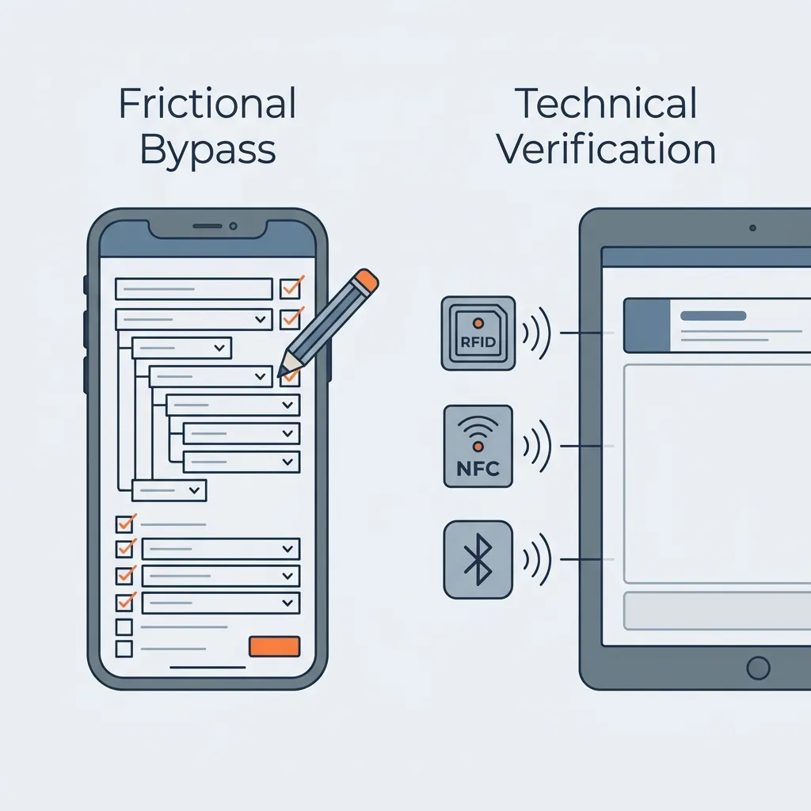

Latest · Jun 2026
AI Constructs Root Causes. It Cannot Identify Them.
AI root cause analysis is a hypothesis, not a finding. Three structural limits explain why — and three tests to run on any vendor that claims otherwise.
Read →On EHS data architecture, SafetyTech product strategy, and applied analytics.
AI root cause analysis is a hypothesis, not a finding. Three structural limits explain why — and three tests to run on any vendor that claims otherwise.
Read →Every required field beyond what workers can complete honestly turns your safety database into compliance fiction. The Friction Budget quantifies the effort a form demands — and the point at which workers stop reading and start typing anything to submit.

Why workers enter fabricated data into EHS apps, and the five technical countermeasures that verify site presence and resolve reporting silos.

A record's timestamp is testimony, not proof. Offline sync lets device clocks lie — and the dual-timestamp design that makes records hold up in an investigation.

97% claim AI adoption. 5% have it embedded. 85% still rely on manual tools. What the 2026 EHS vendor surveys reveal when you read past the headline.
Digital error traps don't stay in individual records. They corrupt the data leadership uses to set priorities. What they are and what to do about them.

Most programmes track leading indicators by convention, not validation. Lag-correlation analysis on a 36-month dataset classifies each metric as Leading, Forewarning, Concurrent, or Weak.

Incident narratives, audit notes, near-miss reports — none of it is machine-readable by default. Turning unstructured text into schema-constrained, queryable data.

Procurement optimises for feature count. Frontline workers abandon systems that don't fit how they work. Why feature-led selection reliably buys the wrong platform.

Most EHS AI projects stall after the proof of concept. A framework for moving from a high-value use case to a production system.

Raw EHS data is messy and context-blind. The governance, cleansing, and labeling decisions that turn crude reports into predictive assets.

Predictive safety needs signals from EHS, HR, and Maintenance together. Why siloed data architecture is the actual blocker — not the algorithm.

Misconceptions about AI deployment in enterprise EHS — and why closing the gap between vision and reality requires a data-first starting point.

Every EHS software request that looks simple conceals architectural decisions nobody documented. Why the visible part of requirements is never the expensive part.

Multi-site deployments fail when the architecture is built for one site and scaled by replication. Designing scalability, ERP integration, and governance in from the start.

ROI calculations are mostly post-rationalisation. What to actually measure, when, and why common quantification mistakes make programmes look like failures.

Phased is not the same as slow. Sequencing needs analysis, vendor selection, change management, and monitoring so each phase creates conditions for the next.

Adoption fails when the human system isn't designed alongside the technical one. How culture and leadership determine whether a platform gets used or worked around.

Buying software is not a strategy. The decisions that matter happen before procurement — and the ones that kill implementations happen the day after go-live.

Hazard controls introduce their own failure modes. Error traps — systemic conditions that make mistakes more likely — are often built into the control itself.

Manual classification is inconsistent and slow. ML models as a triage system to standardise classification at scale — shifting focus to data governance.

Recording incidents is not analysis. Identifying patterns, correlations, and root causes across incident data requires a different data model than most systems are built with.

Accurate accident recording is the foundational architecture of a safety system. How ESAW transforms reporting into a diagnostic tool — and where its granularity becomes a field trap.

The analysis and planning phase is where most implementations win or lose. Needs assessment, objective-setting, and stakeholder alignment done before vendor selection — not after.

It fails as a compliance tool. It succeeds as data architecture for operational truth. Why infrastructure beats technological fixes.